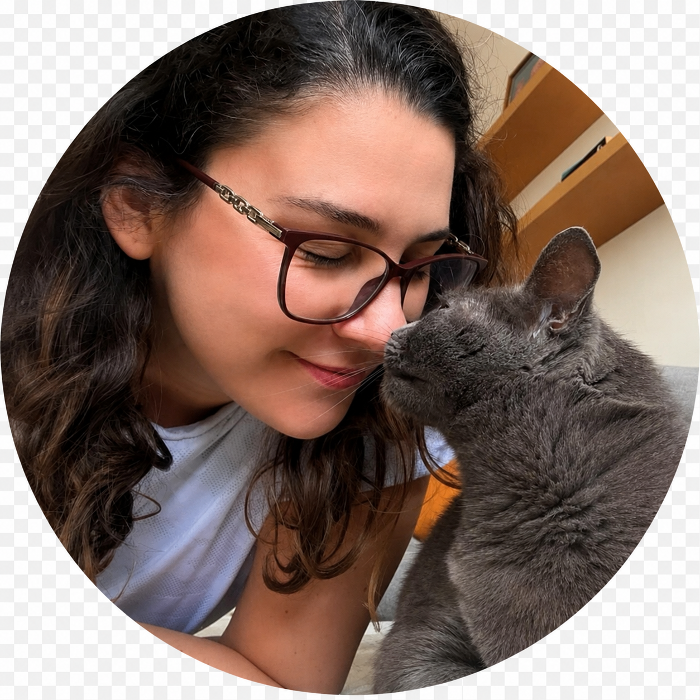
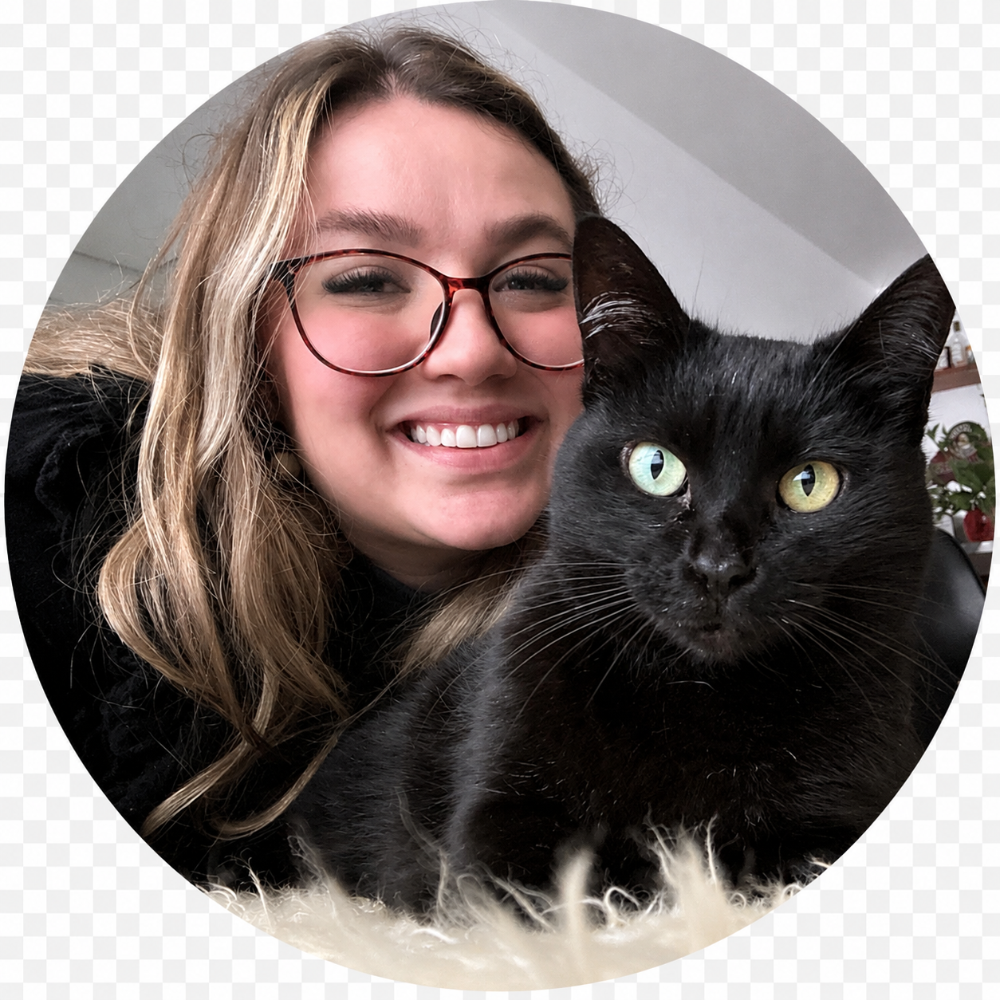

Quem somos nós
Duas apaixonadas por gatos que transformaram amor em profissão — e anos de experiência em cuidado de verdade.


Nossa história
Nos conhecemos atuando em um difícil caso de resgate de quase 100 gatinhos, não foi uma tarefa fácil, mas que além de ajudar tantos animais, também nos uniu. Depois disso, fundamos o Miau de Apê, projeto que ajuda diversos gatinhos em situação de rua em Porto Alegre e região.
A partir das nossas experiências de anos resgatando e doando diversos gatinhos, decidimos que além da parte voluntária seguiríamos também uma carreira nessa área. Foi aí que passamos a trabalhar exclusivamente como cat sitters, deixando para trás nossas antigas profissões.
Atualmente, além do cat sitting, também ajudamos diariamente tutores a lidar melhor com seus gatinhos a partir das nossas consultorias personalizadas.
Juntas hoje, já somamos 10 anos de experiência trabalhando profissionalmente com gatos, atendendo centenas deles.
Hoje além dos serviços que já oferecemos, sentimos também a necessidade de criar um guia completo sobre gatos. Uma oportunidade de repassar todo o conhecimento que adquirimos ao longo dos nossos anos de experiência no cuidado diário desses animais para os tutores que, assim como nós, são apaixonados por seus gatinhos.